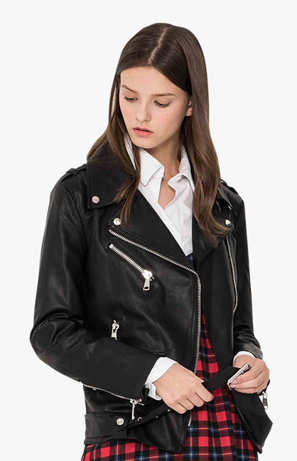
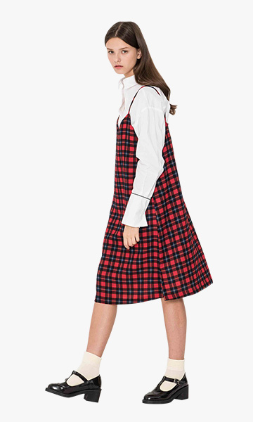

prev
next
SOFT
PUNK
PUNK
새롭게 변신한 펑크 스타일의
레드 배색 줄무늬 풀오버
레드 배색 줄무늬 풀오버
레더 느낌의 바이커 베스트는 간절기에 활용도 만점이죠.
베스트 하나만으로도 스트리트 분위기 업! 코트 안에서도
포인트로 활약할 예정입니다.

-

이번 시즌 펑크 스타일은 조금 색다릅니다.
무섭고 강하게 느껴지던 스터드나 바이커 느낌에 여성스러운 느낌이
살짝 가미된 것이죠. 포인트가 되는 디테일이 들어간 이너웨어와 매치해서
더욱 캐주얼하게 소프트 펑크를 즐겨보세요! -
줄무늬 풀오버는 만능 엔터테이너 같은 아이템.
그러나 여기에 레드 배색의 소매가 살짝 튤립 모양을
이루면서 펑크 룩에 부드러움을 가미합니다.
여성스러운 포인트로 딱이죠! -

소프트 펑크와 잘 어울리는 아이템 중 하나는 역시
타탄 체크! 타탄 체크 원피스와 바이커 재킷을 매치해
큐트하게 연출해보세요. -
그레이 슬랙스는 베이식 아이템 중 하나죠.
살짝 턱 장식이 들어간 깡총한 길이의 슬랙스는
포멀한 재킷과도 캐주얼한 바이커 아우터와도 잘 어우러집니다. -
여러 개의 패치 장식이 달린 롱 카디건도 소프트 펑크를 표현하는 방법 중 하나!
그런지한 느낌을 주기 위해 체크 롱 셔츠와 겹겹히 믹스 매치헤보세요.